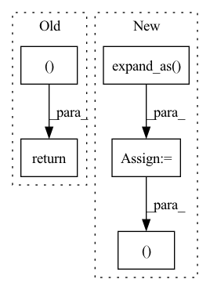

Pattern ID :2026
Before Change
def forward(self, E: Tensor, J: Tensor):
x = E.square().sum(-1, keepdim=True)
G = jacobian(self.func, x)
return G * E, J
class FastTriggs(nn.Module):
"""After Change
"""
x = E.square().sum(-1, keepdim=True)
g = jacobian(self.func, x)
s = s.expand_as( E) .reshape(-1, 1)
return g * E, s * J
class FastTriggs(nn.Module):
r"""In pattern: SUPERPATTERN
Frequency: 3
Non-data size: 5
Instances Fragment ID: 13750663
Project Name: pypose/pypose
Commit Name: 0a01e666b48aa48903cdadab810bb3de0e4252c1
Time: 2022-07-12
Author: jeffsan@gmx.com
File Name: pypose/optim/corrector.py
M Class Name: TrivialScale
N Class Name: GradScale
M Method Name: forward(3)
N Method Name: forward(3)
M Parent Class: nn.Module
N Parent Class: nn.Module
M File Name: pypose/optim/corrector.py
N File Name: pypose/optim/corrector.py
M Start Line: 17
M End Line: 18
N Start Line: 44
N End Line: 46
Before Change
def forward(self, E: Tensor, J: Tensor):
x = E.square().sum(-1, keepdim=True)
G = jacobian(self.func, x)
return G * E, J
class FastTriggs(nn.Module):
"""After Change
"""
x = E.square().sum(-1, keepdim=True)
g = jacobian(self.func, x)
s = s.expand_as( E) .reshape(-1, 1)
return g * E, s * J
class FastTriggs(nn.Module):
r""" Fragment ID: 13750662
Project Name: pypose/pypose
Commit Name: e3cfe6c2a3cad823d35c9a48d6b711b7248e19b7
Time: 2022-07-10
Author: jeffsan@gmx.com
File Name: pypose/optim/corrector.py
M Class Name: TrivialScale
N Class Name: GradScale
M Method Name: forward(3)
N Method Name: forward(3)
M Parent Class: nn.Module
N Parent Class: nn.Module
M File Name: pypose/optim/corrector.py
N File Name: pypose/optim/corrector.py
M Start Line: 17
M End Line: 18
N Start Line: 44
N End Line: 46
Before Change
conv = self.conv(observation)
flatten = conv.view(time, batch, -1) // (T*B, C", H", W") -> (T, B, C" * H" * W")
f = self.fe(flatten)
return self.policy(f), self.value(f).squeeze(-1)
class ModelMLP(nn.Module):
// predicts p(s"|s, a)After Change
f = self.fe(flatten)
if self.distribution in ["TanhNormal", "Normal"]:
mean = self.policy(f)
log_std = self.actor_log_std.expand_as( mean)
policy = torch.cat((mean, log_std ), -1)
else:
policy = self.policy(f)
value = self.value(f).squeeze(-1) Fragment ID: 13750665
Project Name: cherrypiesexy/imitation_learning
Commit Name: de8df8c52d0817134283e2418c570f59e81910fc
Time: 2020-07-01
Author: dmitry.akimov@giant.ai
File Name: algorithms/nn.py
M Class Name: ActorCriticAtari
N Class Name: ActorCriticAtari
M Method Name: forward(2)
N Method Name: forward(2)
M Parent Class: nn.Module
N Parent Class: nn.Module
M File Name: algorithms/nn.py
N File Name: algorithms/nn.py
M Start Line: 99
M End Line: 100
N Start Line: 94
N End Line: 102